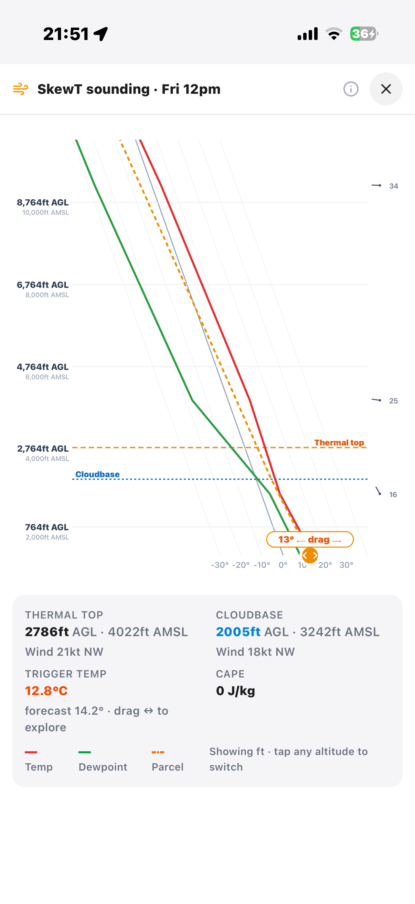
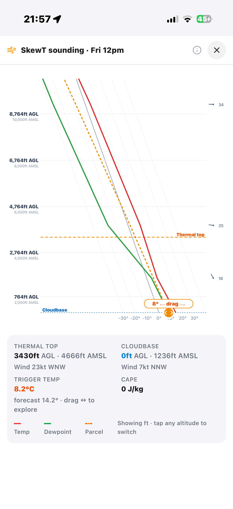
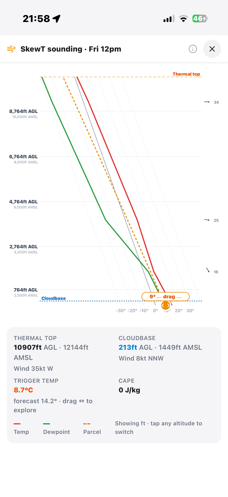
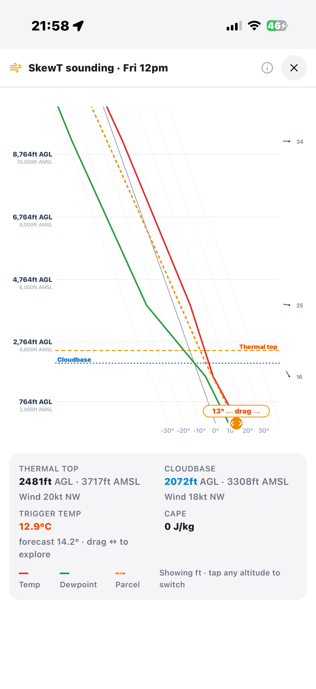
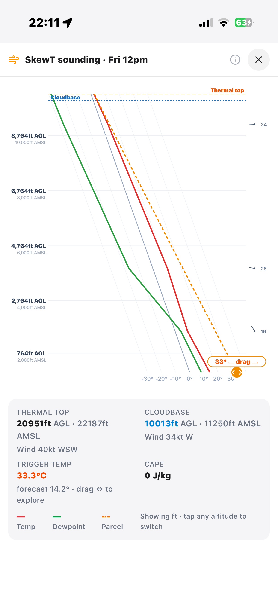

Inland flying runs on an invisible engine. This is how to tell if it will fire — and how high it will take you.
Let's go ↓On an inland day, the sun heats the ground, the ground heats the air, and blobs of that warm air peel off and rise. Those rising blobs — thermals — are what we climb in. The whole game is reading whether the engine will start, and how far up it will run before it hits a ceiling.
Everything below builds one picture, one step at a time. No maths. Just a bubble, a lid, and a cloud.
Warm air leaving the ground. The hotter the ground, the warmer and more buoyant the bubble — and the harder it pushes up.
A warm, stable layer partway up (an inversion). It acts like a ceiling that weak bubbles simply can't get through.
When a bubble cools to its dew point it turns to cloud. Making cloud releases heat — a turbo-boost that helps punch through the lid.
The SkewT in the SkyHigh app draws the same three players as lines. You don't need to read it like a scientist — just know which line is which.

Drag the slider to heat the ground. Watch the bubble climb, make cloud, and fight the lid. Find the moment the day switches on.
This is a simplified model to build intuition — it exaggerates for clarity. The real atmosphere is messier, which is exactly why we look at a real forecast next.
Here's an actual inland sounding. As we heat the ground a single degree at a time, the answer swings wildly — including one result that feels completely backwards.

Ground barely warm. The bubble is feeble, bumps into the lid and stops. Cloudbase is right on the deck.

One extra degree is just enough to punch through the lid. Above it the air is unstable, so the bubble keeps accelerating — 3,400 → nearly 11,000 ft from a single degree.

Hotter ground gave a lower top?! Heating the ground adds no moisture, so cloudbase climbs. Now the bubble is dry all the way to the lid, cools fast, and quits before it can make cloud and get the turbo. Top crashes down onto a rising cloudbase.

Crank the ground to unrealistically hot and the bubble is so over-buoyant it ignores the lid entirely, climbs ~10,000 ft dry to a very high cloudbase, then rides the cloud-turbo into the flight levels.
As you heat the ground, cloudbase climbs steadily and predictably — it's just dew-point maths. But the thermal top jumps, collapses, then soars, because of its fight with the lid.
| Ground | Thermal top | Cloudbase | What's happening |
|---|---|---|---|
| Cold | ~3,400 ft | on the deck | Too weak — stuck under the lid |
| +1° | ~10,900 ft | ~200 ft | Breaks the lid — explosive climb |
| Warmer | ~2,500 ft | ~2,000 ft | Cloudbase lifts to the lid — dry bubble capped |
| Baking | ~21,000 ft | ~10,000 ft | So hot it blasts through everything |